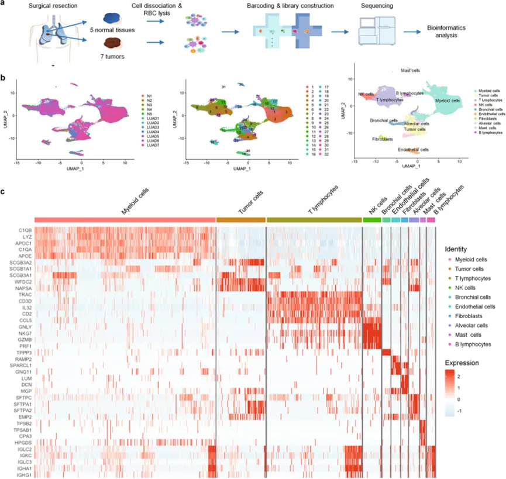
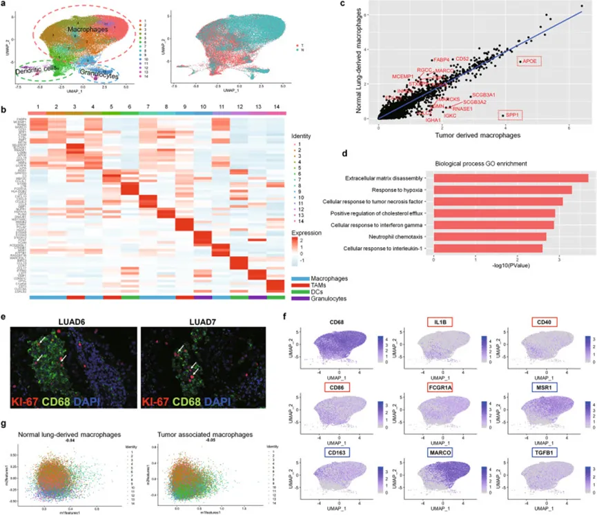
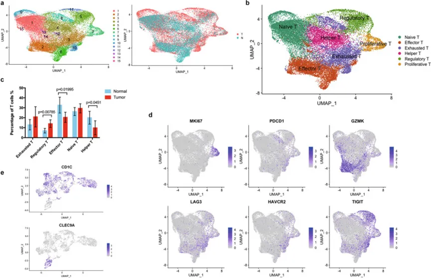
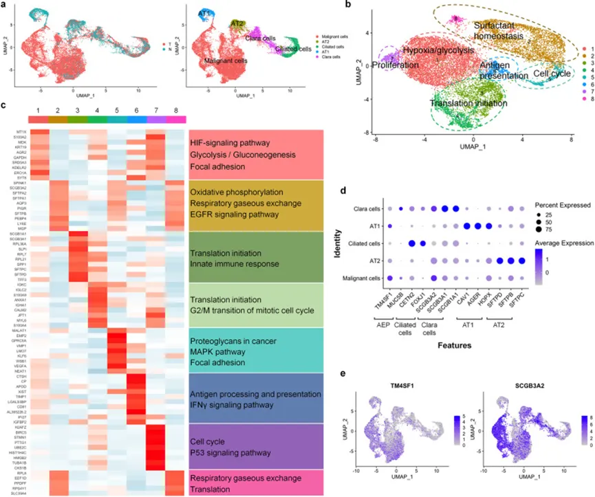
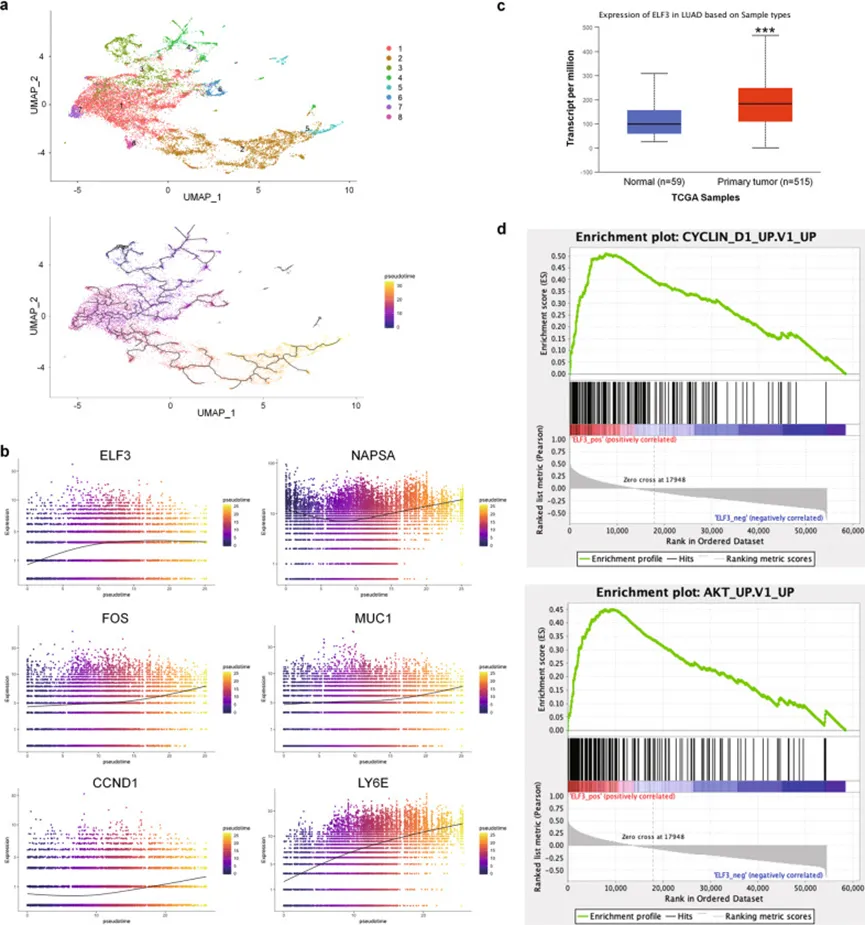
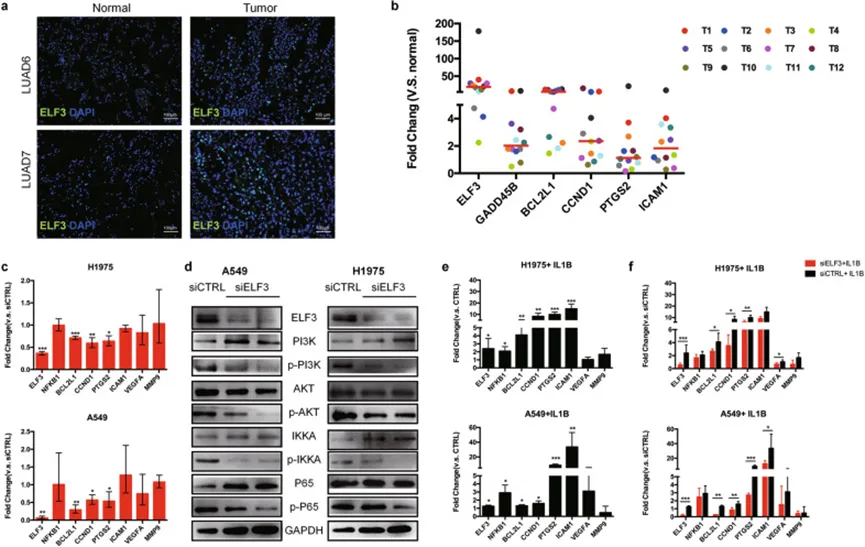

老树开新花—EGFR、肿瘤、免疫+scRNA-Seq
原文：https://mp.weixin.qq.com/s?__biz=MzAwMzIzOTk5OQ==&mid=2247498596&idx=2&sn=8f63f5856cdf90e15f1d19b4cfe6a39e&chksm=9b3c8234ac4b0b221a5d2c417558f0e63f742459c0a3f8c1cbb4cdf74ce25ddcaf0e48f4a7ce#rd 合集：单细胞教程全收录 / 文献速递
Biomamba荐语
这是一篇粉丝来稿，阅读是一种习惯，让自己紧跟科技前沿，学术研究忌闭门造车。因此我们也鼓励大家多阅读、多记录，欢迎大家的来稿，我可以酌情为大家提供稿费、资料、阅读指导。目前来说，单细胞测序最成功的应用领域仍是肿瘤学。原因方面，肿瘤组织异质性高是其一，单细胞领域衍生了很多与肿瘤分析相关的算法与packages是其二。肿瘤学仍有许多未解之谜，另一边单细胞测序也在蓬勃发展，这两个学科也算交相辉映、相得益彰。EGFR与肿瘤的关系不必多说，此前的研究已是铺天盖地，今天这篇8分的文章(Single-cell RNA sequencing reveals heterogeneous tumor and immune cell populations in early-stage lung adenocarcinomas harboring EGFR mutations)从单细胞的角度再次解析了这个故事，相信也会对大家的课题有所启示。
doi:
10.1038/s41388-020-01528-0
链接：
https://pubmed.ncbi.nlm.nih.gov/33144684/
概述
应用单细胞测序技术可以对不同肿瘤的肿瘤异质性和肿瘤微环境（TME）进行研究。本文针对早期肺腺癌存在EGFR突变的这种肺腺癌亚型进行了测序分析，揭示了早期肺腺癌中携带EGFR突变的肿瘤异质性和免疫细胞特征，并鉴定了一个与EGFR突变型肺腺癌进展相关的基因：ELF3，通过细胞实验验证，表明ELF3有可能是一种新的治疗靶点。
Introduction
● 背景
携带EGFR突变的肺腺癌在亚裔人员中普遍存在，并且对靶向治疗敏感，但是大多数患者应用靶向治疗后会出现耐药。目前认为肿瘤内异质性与靶向治疗耐药相关。因此了解EGFR突变型肺腺癌的肿瘤异质性有助于探索靶向治疗耐药的机制。
● 研究目的
本研究，作者对七名携带EGFR突变的早期（I/II期）肺腺癌患者进行了单细胞测序分析，作者比较肿瘤细胞与相邻对照肺组织的细胞异质性，研究了不同细胞类型（包括肿瘤细胞和TME的其他主要细胞成分）之间的复杂相互作用。
Methods
****●********1.****活检单细胞悬浮液的制备
手术后切除肿瘤组织和肿瘤邻近的非恶性肺组织（约1.5 cm×1 cm × 0.5 cm），并在冰上以DMEM / F12培养基（Gibco 11320082）在一小时内运输到研究设施单细胞RNA。
******●**2. 文库构建、测序和数据分析
为了，作者使用持续暴露样肺表型。为了识别单个细胞类型的变化，作者采用多重单细胞RNA测序（scRNA-seq）来观察正常和受损晚期肺部发育期间细胞组成和状态的变化。单细胞悬浮液（~1 × 106/ml）被提交给10X基因组学铬控制器（这里的翻译可能有点问题？）以产生单细胞GEM（乳液中的凝胶珠）。构建的Chromium Single Cell 3'库旨在按照制造商的说明为一个样品估计6000个细胞（10x基因组学Chromium Single Cell 3'库和Gel Bead Kit v2）。然后通过Illumina Hiseq X Ten平台对库进行测序。
******●**3. 下游验证
除了数据分析之外，作者还通过免疫组化，蛋白印迹和细胞培养来验证ELF3的作用。
**Results **
******●**1. 数据总体情况
作者对手术切除的7例含有EGFR突变的肺腺癌患者进行单细胞测序。共有7个肿瘤样本和匹配的5个癌旁样本。通过标准的单细胞测序处理流程，得到了125，674个细胞用于后续分析。通过对单个细胞进行无监督聚类，得到了32个Cluster。然后作者通过典型的marker基因和差异基因富集分析，将细胞分为8类，分别是肿瘤细胞，支气管/肺泡上皮细胞，骨髓细胞，T淋巴细胞，B淋巴细胞，癌症相关成纤维细胞，内皮细胞和肥大细胞。

******●********2.******肿瘤相关巨噬细胞（TAM）
作者先前的研究表明，骨髓细胞是肿瘤组织和肺组织中浸润最丰富的免疫细胞。进一步将骨髓细胞进行聚类分析，分为14个亚群，结果发现大多数的骨髓细胞是表达CD68的巨噬细胞，同时本研究发现早期携带EGFR突变的肺腺癌中，TAM表达了促进肿瘤发生的基因，但它们还没有明显的M1和M2极化。(既往研究认为，肿瘤中的TAM在表型上与抗炎M2极化巨噬细胞相似)。

● 3. 早期 LUAD 具有免疫抑制性 T 淋巴细胞和树突状细胞群
T细胞占所有非恶性细胞群的约20-60%。肿瘤样品和正常组织具有相同的T细胞簇。进一步亚组分析，发现肿瘤浸润的T细胞具有高度表达的调节和耗尽的标志物，如TIGIT，LAYN，FOXP3，CTLA4，而正常组织中的T细胞具有高度表达的效应物和幼稚的T细胞标志物。这表明早期LUAD存在免疫抑制性肿瘤微环境（TME）。本研究还发现，早期LUAD的DC主要是CD1C，这意味着它们在抑制效应T细胞和促进调节性T细胞方面的作用。这些结果都表明：携带EGFR突变的早期LUAD具有免疫抑制性TME。

****● 4. 肿瘤细胞
作者将具有异常CNV的细胞被鉴定为恶性细胞。根据差异基因的富集分析，将其分为八个Cluster，这些Cluster分别在缺氧，糖酵解，氧化磷酸化，翻译起始，细胞周期和抗原呈递等途径中富集。与正常肺上皮细胞相比，恶性细胞中的 TM4SF1 和 SCGB3A2 表达升高。作者的研究结果揭示了不同的肿瘤细胞簇，其中DEG在不同的途径中富集，这意味着它们之间存在进展异质性。

● 5. 拟时序分析鉴定与LUAD进展后不良预后相关的基因
通过拟时序分析，作者鉴定了拟时间轨迹内更高级细胞中上调的基因，并关注了那些与癌症进展，TME信号和预后不良相关的基因。最终作者选择ELF3基因作为后续研究的对象。首先作者应用TCGA数据库中的LUAD的bulk数据分析了ELF3在肺腺癌和正常组织中的表达差异，结果发现ELF3在肺腺癌中明显高表达。进一步通过细胞实验证明ELF3在IL1B诱导后通过LUAD细胞中的PI3K / AKT / NF-κB信号通路促进肿瘤生长。这些结果表明：LUAD肿瘤细胞中的ELF3可以作为预防肿瘤生长的新型治疗靶点。


Discussion
本文作者通过单细胞测序技术为了解亚洲患者中携带EGFR突变的早期LUAD中的异质性和免疫细胞谱提供了宝贵的资源。确定了包括ELF3在内的关键基因，以介导肿瘤细胞及其TME成分之间的相互作用，这表明ELF3可能是LUAD未来药物发现的治疗靶点。
● 总结：
本文从临床问题入手，选择携带EGFR突变的早期LUAD为研究对象，对LUAD 和正常肺组织进行单细胞转录组分析。文章的前半部分为常规的单细胞分析流程，并通过拟时序分析找到了与早期肺腺癌进展相关的基因，后半部分进行了细胞实验，进行功能验证和调控通路验证，提出ELF3可能是早期肺腺癌药物治疗的靶点。本文逻辑清晰，生信分析结合实验验证，值得借鉴，可复制性强。局限之处：本文的单细胞分析为常规分析，可进一步加入高阶分析，同时如果能加入动物成瘤实验和药物干预，有可能冲击影响因子更高的文章。

如何联系我们
 公众号后台消息更新不及时，超过48h便不允许回复读者消息，这里给大家留一下领取资料、免费服务器的微信号 ，方便各位随时交流、提建议(科研任务繁重，回复不及时请见谅)。此外呼声一直很高的交流群 也建好了，欢迎大家入群讨论：永久免费的千人生信、科研交流群
公众号后台消息更新不及时，超过48h便不允许回复读者消息，这里给大家留一下领取资料、免费服务器的微信号 ，方便各位随时交流、提建议(科研任务繁重，回复不及时请见谅)。此外呼声一直很高的交流群 也建好了，欢迎大家入群讨论：永久免费的千人生信、科研交流群
大家可以阅读完这几篇之后添加给生信入门初学者的小贴士 如何搜索公众号过往发布内容

 您点的每个赞和在看，我都认真当成了喜欢
您点的每个赞和在看，我都认真当成了喜欢